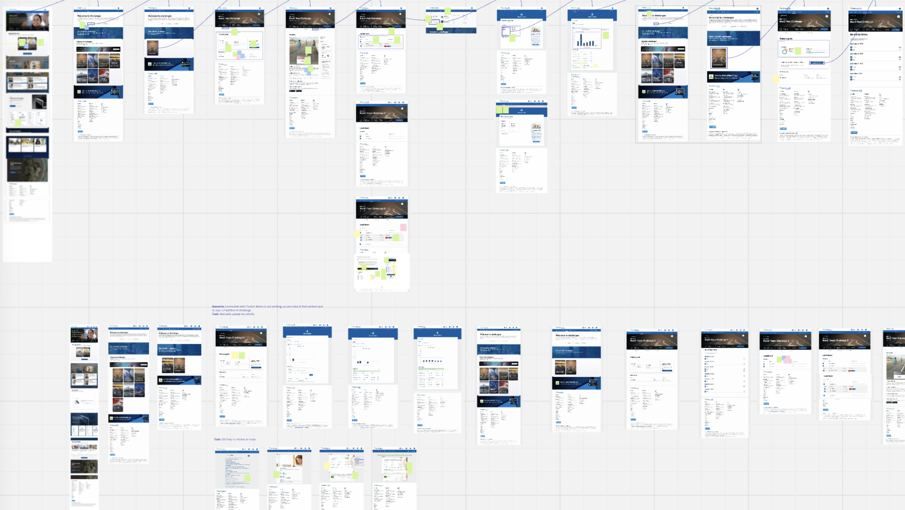
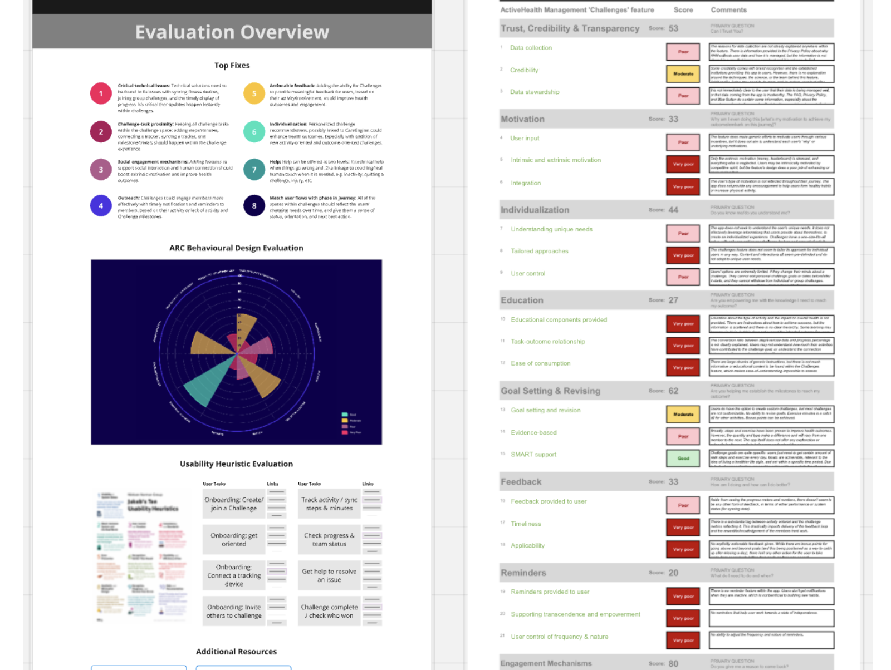
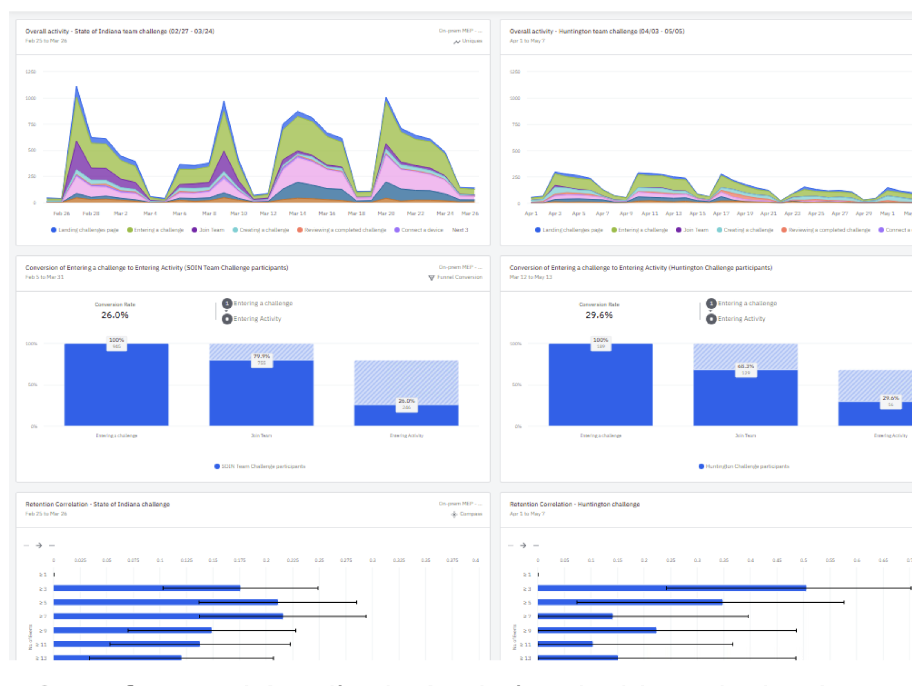
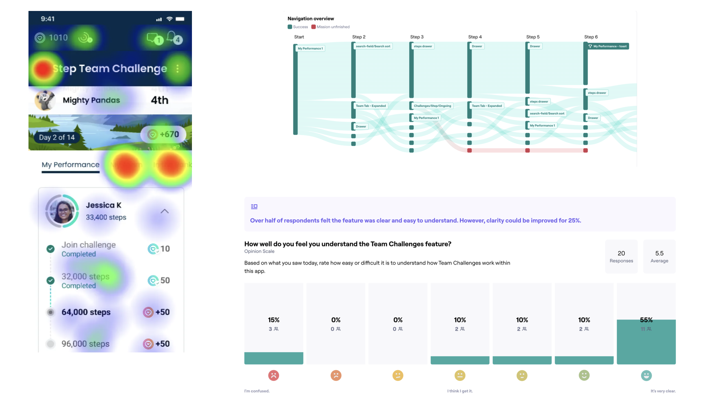

Enhancing Employee Engagement with Digital Wellness Features
Our company was repositioning itself as a leader in AI healthcare solutions and seeing increasing demand for the design of novel AI-powered features.
The sales team was struggling to articulate the value of UX in AI-focused engagements. While the UX team had strong relevant capabilities, we needed to support this organizational shift by clarifying how our skillsets were relevant for AI projects. One aspect of this transition was creating proprietary, domain-specific offerings to position ourselves as experts in the market.
Challenges Feature Attracting Users but Failing to Retain Them
A workplace wellness company was redesigning its member platform to stay competitive and grow its user base.
The Team Challenges feature played a central role in attracting new users. While it drove initial adoption, it did not sustain engagement or retention over time. Many users dropped off after the challenge ended.

Gathering Insights Across Sources and Over Time
I supported the product over multiple cycles, using a mix of data sources to guide decisions and track progress.
- Assessed the legacy experience through heuristic and behavioural design reviews.
- Gathered input from stakeholders and users to understand goals and pain points.
- Analyzed product analytics to identify drop-off points and usage patterns.
- Reviewed customer feedback and survey responses to capture user sentiment.
- Conducted competitor analysis to identify common patterns and gaps.
- Ran iterative rounds of unmoderated usability testing to refine new designs.



Tiny Amounts of Friction Can Kill Momentum
- Initial engagement was strong, but the experience did not sustain motivation.
- Some core flows were difficult to understand, limiting participation.
- Users needed clearer feedback, progress tracking, and a sense of momentum.
- Small improvements to clarity and structure had a measurable impact on usage.
- Nudges to set personalized goals helped sustain user engagement beyond event-based interaction.
Measureable Improvements to Key Metrics
- Informed a full redesign of the Team Challenges feature.
- Improved usability and clarity across key interactions.
- Helped the team focus on features that support ongoing engagement.
- Established analytics to track performance across multiple user cohorts.
- Delivered a feature now in development, with strong signals for improved retention (>30% increase in post-Challenge engagement for three early adopter cohorts).
Led Product Research and Stakeholder Collaboration
I provided continuity across a long-term, evolving product area.
I connected feedback, behavioural data, and testing results into a clear view of what needed to change. I worked closely with product and design to guide decisions over time, ensuring that each iteration built on what we had learned.